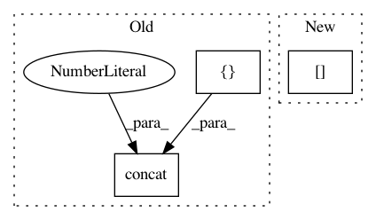

b3bf199724ec76c2642d3406cd99f60495100605,texar/tf/modules/embedders/embedder_base.py,EmbedderBase,_get_dropout_layer,#EmbedderBase#Any#Any#Any#Any#,64
Before Change
if st == "element":
noise_shape = None
elif st == "item":
noise_shape = tf.concat([tf.shape(dropout_input)[:ids_rank],
tf.ones([self._dim_rank], tf.int32)],
axis=0)
elif st == "item_type":
noise_shape = [None] + [1] * self._dim_rank
else:
raise ValueError("Unknown dropout strategy: {}".format(st))
After Change
elif st == "item":
assert dropout_input is not None
assert ids_rank is not None
noise_shape = (dropout_input.get_shape().as_list()[:ids_rank]
+ [1] * self._dim_rank)
elif st == "item_type":
noise_shape = [None] + [1] * self._dim_rank // type: ignore
else:
In pattern: SUPERPATTERN
Frequency: 3
Non-data size: 3
Instances
Project Name: asyml/texar
Commit Name: b3bf199724ec76c2642d3406cd99f60495100605
Time: 2019-10-21
Author: pengzhi.gao@petuum.com
File Name: texar/tf/modules/embedders/embedder_base.py
Class Name: EmbedderBase
Method Name: _get_dropout_layer
Project Name: dmlc/gluon-cv
Commit Name: ee602b6f68f0bdd19f449a86955697f8f0a2d54c
Time: 2019-09-21
Author: yizhu59@gmail.com
File Name: gluoncv/data/transforms/video.py
Class Name: VideoTenCrop
Method Name: forward
Project Name: ray-project/ray
Commit Name: 592c161032bfd697ef6f2f334c5cd007062bec4b
Time: 2020-11-25
Author: sven@anyscale.io
File Name: rllib/models/tf/recurrent_net.py
Class Name: LSTMWrapper
Method Name: forward